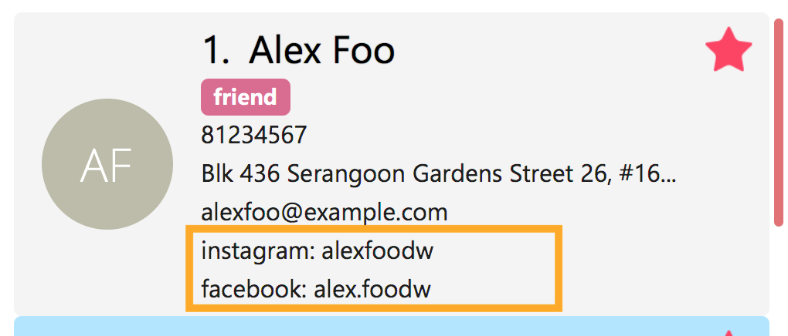

By: Team W10-B2 Since: Aug 2017 Licence: MIT
1. Introduction
1.1. About
This user guide will provide you with instructions on how to use the KayPoh! application. You should not need any prior technical knowledge to make use of this guide. However, some knowledge about a command line interface would be helpful.
1.2. Product Overview
Have you ever gotten curious about what your friends, family, or maybe even that old classmate you haven’t spoke to in years have been up to? But perhaps you don’t really want to talk to them right now. So, what do you do? You stalk their social media accounts!
KayPoh! is a desktop contact management application designed specifically for social users. You can use KayPoh! to store contact and social information information about people, and use it to view your contacts' social media feeds at any time.
2. Getting Started
2.1. Set Up
-
Ensure that you have Java version
1.8.0_60or later installed in your computer. Verify your java version here.Having any Java 8 version is not enough.
This appplication will not work with earlier versions of Java 8.
Download the latest Java version here. -
Download the latest
addressbook.jarhere. -
Store the
addressbook.jarfile into a folder of your choice. This will be thehomefolder for the application. -
Double-click the file to start the application.
2.2. First Usage
-
Figure 1 below displays the application’s starting display.
Figure 1. User Interface of KayPoh! -
Figure 2 below introduces the key panels of the application.
 Figure 2. User Interface of KayPoh!
Figure 2. User Interface of KayPoh! -
Try it yourself! Type some of these commands in the command input box and press Enter to execute it:
-
list: lists all contacts -
addn/John Doe p/98765432 e/johnd@example.com a/John street, block 123, #01-01: adds a contact namedJohn Doeto the Address Book. -
delete3: deletes the 3rd contact shown in the current list -
exit: exits the app
-
-
Refer to the Features section below for the details of each command.
3. Using Commands
To perform actions in KayPoh!, you will need to type a command into the command input box, followed by the enter key.

3.1. Breaking down the command syntax
Commands have the following format: COMMAND_WORD -OPTION PARAMETERS
-
The
COMMAND_WORDis the first word in the command-
It specifies what you want to do
-
-
OPTIONScome after theCOMMAND_WORD-
They are prefixed with a dash (e.g.
-tag) -
Provides more information on how the action is to be performed
-
-
PARAMETERSare the last segment of the command-
They provide the information required to execute the action
-
Example:
-
find -tag friendscan be understood as "find contacts with the tag friends"
3.2. Representing a person as a parameter
When using commands that involve managing contact information, you may be required to enter information about a person as a PARAMETER.
Each person stored in the address book has the following attributes:
-
Name (required)
-
Represented with the prefix
n/followed by the person’s name - e.g.n/John Doe -
The name must be composed of alphanumeric characters and spaces
-
-
Phone Number (required)
-
Represented with the prefix
p/followed by the person’s phone number - e.g.p/81231234 -
The phone can only contain numbers and must be at least 3 digits long
-
-
Address (required)
-
Represented with the prefix
a/followed by the person’s address - e.g.a/123 Clementi Road, Blk 32, #01-01
-
-
Email Address (required)
-
Represented with the prefix
e/followed by the person’s email address - e.g.e/johndoe@example.com -
The email address must be a valid email address
-
-
Tag (optional)
-
Used to describe a person (e.g.
friendsorfamily) -
Represented with the prefix
t/followed by the description - e.g.t/friends -
The description must be an alphanumeric string
-
A person can have multiple tags
-
-
Social Media Account (optional)
-
Used to describe a social media account associated with the person
-
Represented with the prefix
s/followed by the the social media platform and the username - e.g.s/facebook john.doe10 -
More information on the supported social media types can be found in the Social Media Integrations section.
-
A person can have multiple social media accounts, but can only have one for each social media platform
-
-
Favorite (optional)
-
Denote that a person is a favorite contact
-
Represented by the presence of the prefix
f/ -
If the prefix is not present, then the person is assumed not to be a favorite contact
-
-
Display Picture (optional)
-
Represented with the prefix
dp/followed by the path to the image to be used as the person’s display picture -
The specified image must be less than 1MB in size
-
If no image is specified, the default image will be used instead
-
Example:
-
The parameter
n/John Doe p/81234567 a/123 Clementi Road, Blk 32, #01-01 e/johndoe@example.com t/friends t/school s/facebook john.doe10 s/instagram jdoe f/ dp//images/display.pngrepresents a person who has:-
The name
John Doe, -
phone number
81234567, -
address
123 Clementi Road, Blk 32, #01-01, -
email address
johndoe@example.com, -
tags
friendsandschool, -
a
facebookaccount with the namejohn.doe10and aninstagramaccount with the usernamejdoe, -
been marked as a
favoritecontact, -
the image at
/images/display.pngused as a display picture.
-
4. Features
4.1. Understanding command formats
In this user guide, you will find information about how commands are to be used explained in the form of command formats.
These command formats will tell you what the COMMAND_WORD for the command is, whether OPTIONS are available for the command,
and what PARAMETERS you need to provide the command with.
|
Example:
-
delete [-OPTION] INDEX [ADDITIONAL_INDEXES]…means that:-
The
COMMAND_WORDisdelete -
An
OPTIONcan be specified, but it is optional -
An
INDEXmust be entered -
Multiple
ADDITIONAL_INDEXEScan be entered, but are optional
-
4.2. Managing Contacts
4.2.1. Adding a person: add
Adds a person to the address book.
Format: add n/NAME p/PHONE_NUMBER [p/ADDITIONAL_PHONE_NUMBERS]… e/EMAIL a/ADDRESS [f/] [dp/DISPLAY_PHOTO_FILE_PATH] [t/TAG]… [s/SOCIAL_PLATFORM USERNAME]…
Alias: a
Examples:
-
add n/John Doe p/98765432 e/johnd@example.com a/John street, block 123, #01-01
Adds a contact with the nameJohn Doe, phone number98765432, email addressjohnd@example.com, addressJohn street, block 123, #01-01. -
add n/Rob Cross p/92456877 p/64123456 e/rob@example.com a/Kent Ridge Drive 23 t/husband f/ s/facebook r.cross10 dp/C:/Users/Seedu/Pictures/batman.png
Adds afavoritecontact with the nameRob Cross, phone numbers92456877and64123456, email addressrob@example.com, addressKent Ridge Drive 23, taghusband, aFacebookaccount with the usernamer.cross10, and adds adisplay photoimported from the locationC:/Users/Seedu/Pictures/batman.png.
4.2.2. Editing a person: edit
Edits an existing person in the address book.
Format: edit INDEX [n/NAME] [p/PHONE]… [e/EMAIL] [a/ADDRESS] [f/ OR uf/] [dp/DISPLAY_PHOTO_FILE_PATH] [t/TAG]… [s/SOCIAL_PLATFORM USERNAME]…
Alias: e
Examples:
-
edit 1 p/91234567 e/johndoe@example.com
Edits the phone number and email address of the 1st person to be91234567andjohndoe@example.comrespectively. -
edit 2 f/ dp/C:/Users/Seedu/Pictures/superman.png s/instagram janedoe123 s/facebook jane.doe
Marks the 2nd person afavoritecontact, changes the existing display photo to the new file specified byC:/Users/Seedu/Pictures/superman.pngand edits the social media accounts to be aFacebookaccount with the usernamejane.doe, and an Instagram account with the usernamejanedoe123. -
edit 3 n/Betsy Crower dp/ t/
Edits the name of the 3rd person to beBetsy Crower, removes existing display photo and clears all existing tags.
4.2.3. Favoriting a person [Since v1.2]: fav
Labels the specified person(s) as a favorite contact.
Format: fav INDEX [ADDITIONAL INDEXES]
Examples:
-
fav 1 3
Favorites the 1st and 3rd person in the most recently displayed list. -
find Betsy
unfav 1
Favorites the first person in the list of contacts with the nameBetsy.
4.2.4. Unfavoriting a person [Since v1.2]: unfav
Removes the the favorite label from the specified person(s).
Format: unfav INDEX [ADDITIONAL INDEXES]
Examples:
-
unfav 2 4
Unfavorites the 2nd and 4th person in the most recently displayed list. -
find Betsy
unfav 1
Unfavorites the first person in the list of contacts with the nameBetsy.
4.2.5. Deleting a person: delete
Deletes the specified person(s) from the address book.
Format: delete [OPTION] KEYWORD [MORE_KEYWORDS]…
Alias: d
The KEYWORD for delete command depends on which options are used.
|
Options:
-
Default (no option specified)
Deletes persons based on their indexes in the last displayed list. -
tag
Deletes persons that have the input tags.
Deleting persons by index (default):
Deletes person(s) specified by their indexes in the last displayed list.
Format: delete INDEX [ADDITIONAL_INDEXES]…
Examples:
-
list
delete 2 3
Deletes the 2nd and 3rd persons in the address book. -
find Betsy
delete 1
Deletes the 1st person in the results of thefindcommand.
Deleting persons by tag [Since v1.4]:
Deletes person(s) that have a the input tags.
Format: delete -tag TAG [ADDITIONAL_TAGS]…
| All contacts with the input tag will be deleted. Make sure that none of the contacts that you do not intend to delete have the input tag. You can use the find command to view all contacts that have the tag. |
Examples:
* delete -tag temp
Deletes all persons with the tag temp
* delete -tag school work
Deletes all persons with the tags school or work
4.2.6. Clearing all entries: clear
Clears all entries from the address book.
Format: clear
4.3. Navigating KayPoh!
4.3.1. Listing persons: list
To have all your contacts displayed in the person list, use the list command.
Command format: list
-
Listing all persons:
list -
Listing all favorite persons [Since v1.2]:
list -fav
Alias: l
You should see the person list populated with all of your contacts after executing the command.
4.3.2. Selecting a person: select
To view the social media feed of a contact, use the select command.
Command format: select INDEX [SOCIAL_MEDIA_PLATFORM]
Alias: s
-
The
INDEXrefers to the index number of the person to be stalked in the person list. -
The
SOCIAL_MEDIA_PLATFORMidentifies which social media account belonging to the person you wish to view. -
If no
SOCIAL_MEDIA_PLATFORMis specified, the feed of a random social media account associated with the person will be displayed in the browser window. If there is no social media account associated with the person, a Google search of the person’s name will be displayed instead.
You should see the person’s social media feed displayed in the browser window.

Example:
-
select 1 facebook
Displays the Facebook account of the first person in the current person list
| Incorrect | Correct |
|---|---|
Input an |
Ensure that the specified |
Input a |
Ensure that the selected user has an associated account for the  |
4.3.3. Finding persons: find
To find contacts by some criteria, use the find command.
Command format:
-
Finding by
name:find KEYWORD [ADDITIONAL_KEYWORDS]… -
Finding by
tag[Since v1.3]:find -tag KEYWORD [ADDITIONAL_KEYWORDS]… -
Finding
favoritecontacts [Coming in v2.0]:find -fav
Alias: f
-
Contacts that match any of the provided
KEYWORDSwill be displayed in the person list. -
The search is case insensitive. e.g
johnwill matchJohn. -
The order of the
KEYWORDSdoes not matter. e.g.John Doewill matchDoe John. -
Only full words will be matched e.g.
Jowill not matchJohn.
You should see the persons that meet the provided criteria displayed in the person list after executing the command.

friendsExamples:
-
find John
Displays persons with the namesjohnandJohn Doein the person list. -
find Betsy Tim John
Displays persons with namesBetsy,Tim, orJohnin the person list. -
find -tag friends colleagues
Displays persons with tagsfriendsorcolleaguesin the person list. -
find -fav
Displaysfavoritecontacts in the person list.
4.3.4. Sorting the displayed list [Since v1.4]: sort
To sort the person list, use the sort command.
Command format:
-
Default sort:
sort -
Sorting by
name:sort -name -
Sorting by
last access date[Since v1.5]:sort -recent
Alias: sr
-
The default sort orders contacts first by their
favoritestatus, then by theirnamein lexicographic order. -
Sorting with the
nameoption orders contacts by theirnamein lexicographic order. -
Sorting with the
recentoption orders contacts by when they were last added, updated, or stalked.
The person list should be sorted based on the specified option after executing the command.


nameExamples:
-
list
sort
Lists all person in the address book, sorted first based on theirfavoritestatus, then by theirnamein lexicographic order. -
find john
sort -recent
Lists all persons whosenamescontain the keywordjohn, sorted based on when they were last added, updated, or stalked.
4.4. Social Media Integrations [Since v1.2]
4.4.1. Representing Social Media Accounts
Social media accounts are represented in the format SOCIAL_TYPE USERNAME.
The social types presently supported are:
-
facebook(aliases:fb) -
instagram(aliases:ig)
Example:
-
facebook johnd10
Represents the Facebook account with the usernamejohnd10. -
ig damyth
represents the Instagram account with the usernamedamyth.
4.4.2. Facebook Integrations
Connecting to Facebook [Since v1.2]: facebookconnect
Connects to your Facebook account.
Command Format: facebookconnect
Posting a status to Facebook [Since v1.3]: facebookpost
Posts a status to your Facebook wall.
Command Format facebookpost STATUS
Examples:
-
facebookpost hello world!
Posts the status 'hello world!' to your Facebook wall.
Sharing a Link to Facebook [Since v1.4]: facebooklink
Shares a link to your Facebook wall.
Command Format facebooklink URL
Examples:
-
facebook post https://www.google.com
Posts the link tohttps://www.google.comto your Facebook wall.
Adding a contact from Facebook [Since v1.5]: facebookadd
Imports a Facebook user as a contact.
Command Format facebookadd USERNAME
Examples:
-
facebookadd barack obama
Imports the facebook user 'Barack Obama' to your contacts.
Adding all your Facebook friends [Since v1.5]: facebookaddallfriends
Imports all your Facebook friends as contacts. (Current maximum is set at 30 friends)
Command Format facebookaddallfriends
4.5. Managing Contact Data
Address book data are saved in the hard disk automatically after any command that changes the data.
There is no need to save manually.
4.5.1. Sharing Contacts
Exporting contact data: export
Exports all contact data to an external file.
Format: export FILE_PATH
Examples:
-
export /Users/seedu/Documents/exportData.xml
Exports contact data to the location/Users/seedu/Documents/exportData.xml
Importing contact data: import
Imports contact data from an external file.
Format: import FILE_PATH
Examples:
-
import /Users/seedu/Documents/exportData.xml
Imports contact data to the location/Users/seedu/Documents/exportData.xml
4.5.2. Synchronizing with the cloud [Coming in v2.0]:
Configuring your cloud account: sync
Configures the addressbook to synchronize with the cloud using the given user credentials.
Format: sync u/USERNAME p/PASSWORD
Synchronizing with the cloud
Address book data is automatically synchronized with cloud when an internet connection is available.
There is no need to synchronize manually.
Removing your cloud account: unsync
Stops synchronizing of contact information with any previously configured cloud accounts.
Format: unsync
4.6. Miscellaneous
4.6.1. Changing themes: theme [Since v1.4]
Changes the color theme of the application.
Format: theme [OPTION]
Options:
-
day
Changes the application theme to a light color scheme. -
night
Changes the application theme to a dark color scheme.
Example:
-
theme -day -
theme -night
4.6.2. Listing entered commands: history
Lists all the commands that you have entered in reverse chronological order.
Format: history
|
Pressing the ↑ and ↓ arrows will display the previous and next input respectively in the command box. |
4.6.3. Undoing previous command: undo
Restores the address book to the state before the previous undoable command was executed.
Format: undo
Alias: u
|
Undoable commands: those commands that modify the address book’s content ( |
Examples:
-
delete 1
list
undo(reverses thedelete 1command) -
select 1
list
undo
Theundocommand fails as there are no undoable commands executed previously. -
delete 1
clear
undo(reverses theclearcommand)
undo(reverses thedelete 1command)
4.6.4. Redoing the previously undone command: redo
Reverses the most recent undo command.
Format: redo
Alias: r
Examples:
-
delete 1
undo(reverses thedelete 1command)
redo(reapplies thedelete 1command) -
delete 1
redo
Theredocommand fails as there are noundocommands executed previously. -
delete 1
clear
undo(reverses theclearcommand)
undo(reverses thedelete 1command)
redo(reapplies thedelete 1command)
redo(reapplies theclearcommand)
4.6.5. Exiting the program: exit
Exits the program.
Format: exit
Alias: x
4.6.6. Viewing help: help
Format: help
6. Command Summary
-
Add
add n/NAME p/PHONE_NUMBER e/EMAIL a/ADDRESS [t/TAG]… [s/SOCIAL_TYPE USERNAME]…
e.g.add n/James Ho p/22224444 e/jamesho@example.com a/123, Clementi Rd, 1234665 t/friend t/colleague s/facebook jamesho -
Clear :
clear -
Delete :
delete INDEX
e.g.delete 3 -
Edit :
edit INDEX [n/NAME] [p/PHONE_NUMBER] [e/EMAIL] [a/ADDRESS] [t/TAG]… [s/SOCIAL_TYPE USERNAME]…
e.g.edit 2 n/James Lee e/jameslee@example.com -
Favorite:
fav INDEX [ADDITIONAL INDEXES]
e.g. `fav 1 2 3 -
Unfavorite:
unfav INDEX [ADDITIONAL INDEXES]
e.g. `unfav 1 2 3 -
Find :
find KEYWORD [MORE_KEYWORDS]
e.g.find James Jake -
List :
list -
Help :
help -
Select :
select INDEX
e.g.select 2 -
History :
history -
Undo :
undo -
Redo :
redo -
Export:
export FILE_PATH
e.g.export /Users/seedu/Documents/exportData.xml -
Import:
import FILE_PATH
e.g.import /Users/seedu/Documents/importData.xml -
Connect to Facebook:
facebook connect -
Post to Facebook:
facebook post STATUS
e.g.facebook post hello world!